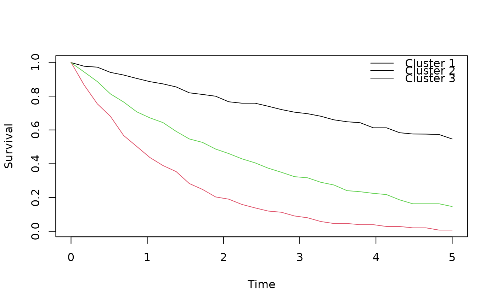

Clusters individuals using their survival-probability curves evaluated on a
common time grid. The method computes a weighted feature representation of
the curves and applies PAM (Partitioning Around Medoids) on the resulting
dissimilarity matrix. If K is not provided, it is selected by maximizing
the mean silhouette width over K = 2, ..., K_max.
Fits an unsupervised clustering model on survival-probability curves evaluated on a common time grid. Clustering is performed using PAM (Partitioning Around Medoids) on a weighted feature representation of the curves.
unsurv(
S,
times,
K = NULL,
K_max = 10,
distance = c("L2", "L1"),
weights = NULL,
enforce_monotone = TRUE,
smooth_median_width = 0,
standardize_cols = FALSE,
eps_jitter = 0.001,
seed = NULL
)
unsurv(
S,
times,
K = NULL,
K_max = 10,
distance = c("L2", "L1"),
weights = NULL,
enforce_monotone = TRUE,
smooth_median_width = 0,
standardize_cols = FALSE,
eps_jitter = 0.001,
seed = NULL
)Numeric matrix of survival probabilities with shape \(n \times m\).
Rows are subjects, columns correspond to times. Values are clamped to \([0,1]\).
Numeric vector of length \(m\) (strictly increasing time grid).
Optional integer number of clusters. If NULL, selected by silhouette.
Maximum K considered when K is NULL.
Distance type: "L2" (euclidean) or "L1" (manhattan).
Optional nonnegative vector of length \(m\) for time-point weights.
If NULL, trapezoidal weights are used.
Logical; enforce non-increasing survival curves over time.
Integer; if \(\ge 3\) and odd, apply median smoothing along time.
Logical; standardize feature columns before clustering.
Nonnegative numeric; feature-space Gaussian jitter sd to break ties.
Optional integer seed.
An object of class "unsurv" with components including:
clusters: integer vector of cluster assignments
K: number of clusters
times: time grid
medoids: medoid survival curves (one per cluster)
silhouette_mean: mean silhouette width
plus preprocessing/settings fields used for prediction
An object of class "unsurv".
This function requires the cluster package for PAM clustering and silhouette widths.
The returned object stores medoid curves and metadata required for prediction
on new curves via predict (method predict.unsurv).
If K is NULL, the number of clusters is selected by maximizing
the mean silhouette width over K = 2, ..., K_max.
Requires the cluster package (recommended in Suggests).
if (requireNamespace("cluster", quietly = TRUE)) {
set.seed(2025)
n <- 40; Q <- 30
times <- seq(0, 5, length.out = Q)
rates <- c(0.12, 0.38, 0.8)
grp <- sample(1:3, n, TRUE, c(0.4, 0.4, 0.2))
S <- t(vapply(1:n, function(i)
pmin(pmax(exp(-rates[grp[i]] * times) + rnorm(Q, 0, 0.01), 0), 1),
numeric(Q)
))
fit <- unsurv(S, times, K = NULL, K_max = 6, distance = "L2",
enforce_monotone = TRUE, standardize_cols = FALSE,
eps_jitter = 0, seed = NULL)
print(fit)
summary(fit)
plot(fit)
pred <- predict(fit, S[1:5, ])
pred
}
#> unsurv (PAM) fit
#> K:3
#> distance:L2 silhouette_mean:0.947
#> n:40 Q:30

#> [1] 1 1 1 1 1
if (requireNamespace("cluster", quietly = TRUE)) {
set.seed(1)
n <- 40
times <- seq(0, 5, length.out = 30)
grp <- sample(1:2, n, TRUE)
rates <- ifelse(grp == 1, 0.2, 0.6)
S <- sapply(times, function(t) exp(-rates * t))
S <- S + matrix(stats::rnorm(n * length(times), 0, 0.02), nrow = n)
fit <- unsurv(S, times, K = NULL, K_max = 6, seed = 123)
table(fit$clusters, grp)
}
#> grp
#> 1 2
#> 1 24 0
#> 2 0 16